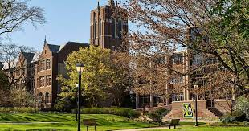

Importance of choosing a strand:

Top universities in the Philippines that offering a STEM strand (2020):
- University of the Philippines Diliman - Quezon City
- Ateneo de Manila University - Quezon City
- University of Santo Tomas - Manila
- University of Santo Tomas - Manila
- De La Salle University - Manila
- Polytechnic University of the Philippines - Manila
- University of the Philippines Manila - Manila
- Silliman University - Dumaguete Cit
- Mapúa University - Manila
- University of the Philippines Los Baños - Los Baños
- University of San Carlos - Cebu City
- Saint Louis University, Baguio City - Baguio City
- University of San Jose-Recoletos Cebu City
- Mindanao State University - Iligan Institute of Technology -Iligan City
- University of the East - Manila
It is only the few list of the universities that have STEM strand.